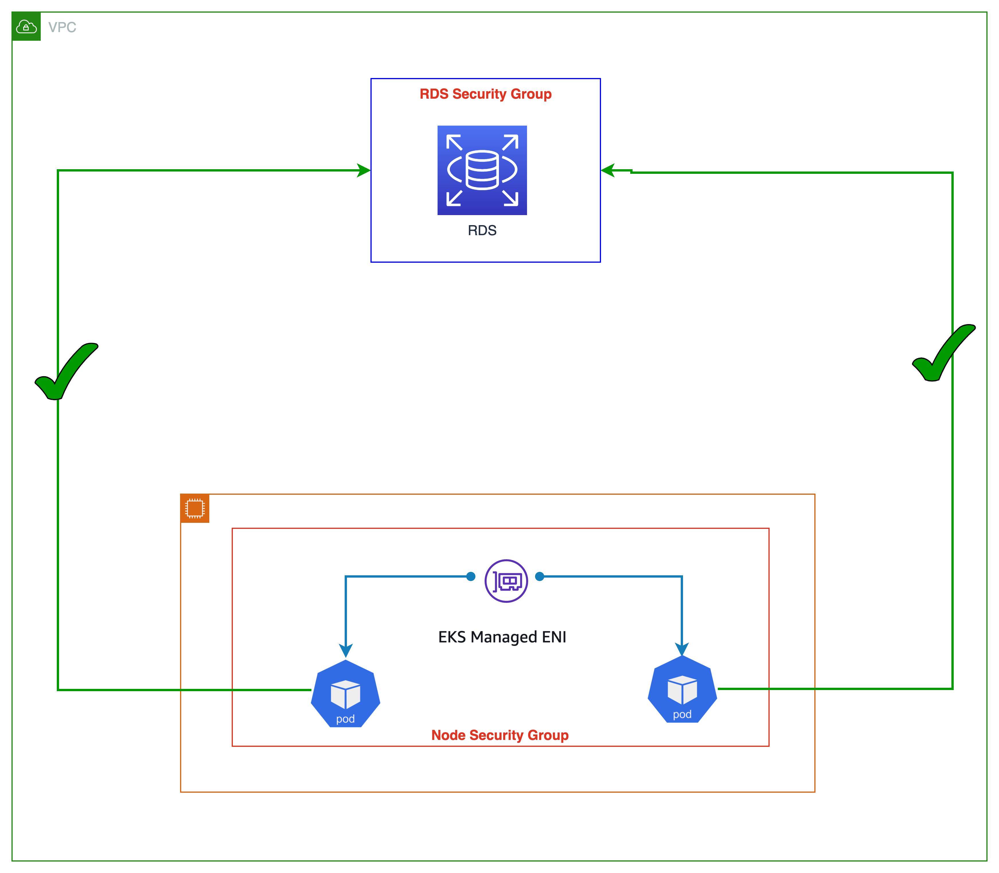

每個 Pod 的安全群組¶
AWS 安全群組是一個虛擬防火牆,用於控制 EC2 實例的入站和出站流量。預設情況下,Amazon VPC CNI 將使用與主要 ENI 關聯的安全群組。更具體地說,與實例關聯的每個 ENI 都將具有相同的 EC2 安全群組。因此,在同一節點上運行的每個 Pod 都共享該節點的安全群組。
如下圖所示,在工作節點上運行的所有應用程式 Pod 都將能夠訪問 RDS 資料庫服務(考慮 RDS 入站允許節點安全群組)。安全群組粒度太粗,因為它們適用於在同一節點上運行的所有 Pod。為 Pod 提供安全群組可以為工作負載提供網路隔離,這是良好防禦深度策略的重要組成部分。
 使用 Pod 的安全群組,您可以通過在共享計算資源上運行具有不同網路安全需求的應用程式來提高計算效率。可以在單個位置使用 EC2 安全群組定義多種類型的安全規則,如 Pod 到 Pod 和 Pod 到外部 AWS 服務,並將其應用於 Kubernetes 原生 API 的工作負載。下圖顯示了在 Pod 級別應用的安全群組,以及它如何簡化您的應用程式部署和節點架構。Pod 現在可以訪問 Amazon RDS 資料庫。

您可以通過為 VPC CNI 設置 ENABLE_POD_ENI=true 來啟用 Pod 的安全群組。啟用後,在控制平面(由 EKS 管理)上運行的"VPC Resource Controller"會創建並附加一個稱為"aws-k8s-trunk-eni"的主幹接口。主幹接口作為一個標準的網路接口附加到實例上。為了管理主幹接口,您必須將 AmazonEKSVPCResourceController 托管策略添加到與您的 Amazon EKS 集群相關的集群角色中。
該控制器還會創建名為"aws-k8s-branch-eni"的分支接口,並將它們與主幹接口關聯。使用SecurityGroupPolicy自定義資源為 Pod 分配安全群組,並將其與分支接口關聯。由於安全群組是使用網路接口指定的,我們現在能夠在這些額外的網路接口上調度需要特定安全群組的 Pod。請查看EKS 用戶指南中關於 Pod 安全群組的部分,包括部署先決條件。

分支接口容量是對現有實例類型二級 IP 地址限制的附加。使用安全群組的 Pod 不計入最大 Pod 公式,當您使用 Pod 的安全群組時,您需要考慮提高最大 Pod 值,或接受運行的 Pod 數量少於節點實際支持的 Pod 數量。
m5.large 最多可以有 9 個分支網路接口和最多 27 個二級 IP 地址分配給其標準網路接口。如下例所示,m5.large 的默認最大 Pod 數為 29,EKS 將使用安全群組的 Pod 計入最大 Pod 數。請參閱EKS 用戶指南了解如何更改節點的最大 Pod 數。
當 Pod 的安全群組與自定義網路結合使用時,將使用 Pod 的安全群組定義,而不是 ENIConfig 中指定的安全群組。因此,啟用自定義網路時,請仔細評估使用 Pod 的安全群組時的安全群組排序。
建議¶
為存活探針禁用 TCP 早期分解¶
如果您使用存活或就緒探針,您還需要禁用 TCP 早期分解,以便 kubelet 可以通過 TCP 連接到分支網路接口上的 Pod。這只在嚴格模式下需要。要做到這一點,請運行以下命令:
在 initContainer 部分,將 DISABLE_TCP_EARLY_DEMUX 的值更改為 true。
使用 Pod 的安全群組來利用現有的 AWS 配置投資¶
安全群組可以更輕鬆地限制對 VPC 資源(如 RDS 資料庫或 EC2 實例)的網路訪問。Pod 的安全群組的一個明顯優勢是可以重複使用現有的 AWS 安全群組資源。 如果您使用安全群組作為網路防火牆來限制對 AWS 服務的訪問,我們建議將安全群組應用於使用分支 ENI 的 Pod。如果您正在將應用程式從 EC2 實例遷移到 EKS,並使用安全群組限制對其他 AWS 服務的訪問,請考慮使用 Pod 的安全群組。
配置 Pod 安全群組強制模式¶
Amazon VPC CNI 插件版本 1.11 添加了一個名為 POD_SECURITY_GROUP_ENFORCING_MODE("強制模式")的新設置。強制模式控制應用於 Pod 的安全群組,以及是否啟用源 NAT。您可以將強制模式指定為 strict 或 standard。Strict 是默認值,反映了 VPC CNI 在 ENABLE_POD_ENI 設置為 true 時的先前行為。
在嚴格模式下,只有分支 ENI 安全群組才會生效。源 NAT 也被禁用。
在標準模式下,主 ENI 和分支 ENI(與 Pod 關聯)的安全群組都會被應用。網路流量必須符合這兩個安全群組。
警告
任何模式更改只會影響新啟動的 Pod。現有的 Pod 將使用創建 Pod 時配置的模式。如果客戶想要更改流量行為,需要回收使用安全群組的現有 Pod。
強制模式:使用嚴格模式隔離 Pod 和節點流量:¶
默認情況下,Pod 的安全群組設置為"嚴格模式"。如果您必須完全分離 Pod 流量和節點其他部分的流量,請使用此設置。在嚴格模式下,源 NAT 被關閉,因此可以使用分支 ENI 出站安全群組。
警告
啟用嚴格模式時,Pod 的所有出站流量都將離開節點並進入 VPC 網路。同一節點上 Pod 之間的流量將通過 VPC。這增加了 VPC 流量,並限制了節點級功能。NodeLocal DNSCache 不支持嚴格模式。
在以下情況下使用標準模式¶
客戶端源 IP 對 Pod 中的容器可見
如果您需要保持客戶端源 IP 對 Pod 中的容器可見,請考慮將 POD_SECURITY_GROUP_ENFORCING_MODE 設置為 standard。Kubernetes 服務支持 externalTrafficPolicy=local 來支持保留客戶端源 IP(默認類型為 cluster)。您現在可以在標準模式下運行 Kubernetes 的 NodePort 和 LoadBalancer 類型服務,使用實例目標並將 externalTrafficPolicy 設置為 Local。Local 保留了客戶端源 IP,並避免了 LoadBalancer 和 NodePort 類型服務的第二次跳躍。
部署 NodeLocal DNSCache
使用 Pod 的安全群組時,請配置標準模式以支持使用 NodeLocal DNSCache 的 Pod。NodeLocal DNSCache 通過在集群節點上作為 DaemonSet 運行 DNS 緩存代理來提高集群 DNS 性能。這將有助於具有最高 DNS QPS 需求的 Pod 查詢本地 kube-dns/CoreDNS,從而提高延遲。
NodeLocal DNSCache 不支持嚴格模式,因為所有網路流量(包括到節點的流量)都進入 VPC。
支持 Kubernetes 網路策略
我們建議在使用網路策略與具有關聯安全群組的 Pod 時使用標準強制模式。
我們強烈建議利用 Pod 的安全群組來限制對 AWS 服務的網路級別訪問,這些 AWS 服務不是集群的一部分。考慮使用網路策略來限制集群內 Pod 之間的網路流量,通常稱為東/西向流量。
識別 Pod 的安全群組的不兼容性¶
基於 Windows 的和非 nitro 實例不支持 Pod 的安全群組。要使用 Pod 的安全群組,實例必須標記為 isTrunkingEnabled。如果您的 Pod 不依賴於 VPC 內部或外部的任何 AWS 服務,請使用網路策略來管理 Pod 之間的訪問,而不是使用安全群組。
使用 Pod 的安全群組有效控制對 AWS 服務的流量¶
如果在 EKS 集群中運行的應用程式必須與 VPC 內的其他資源(例如 RDS 資料庫)進行通信,那麼請考慮使用 Pod 的安全群組。雖然有政策引擎允許您指定 CIDR 或 DNS 名稱,但在與 VPC 內部端點通信的 AWS 服務通信時,它們是一個次優選擇。
相比之下,Kubernetes 網路策略提供了一種機制來控制集群內部和外部的入站和出站流量。如果您的應用程式對其他 AWS 服務的依賴性有限,則應考慮使用 Kubernetes 網路策略。您可以配置網路策略,指定基於 CIDR 範圍的出站規則,以限制對 AWS 服務的訪問,而不是使用 AWS 本機語義(如 SG)。您可以使用 Kubernetes 網路策略來控制 Pod 之間的網路流量(通常稱為東/西向流量)以及 Pod 和外部服務之間的流量。Kubernetes 網路策略在 OSI 第 3 和第 4 層實現。
Amazon EKS 允許您使用網路策略引擎,如 Calico 和 Cilium。默認情況下,網路策略引擎未安裝。請查看相應的安裝指南,了解如何設置。有關如何使用網路策略的更多信息,請參見EKS 安全最佳實踐。網絡策略引擎的企業版本提供了 DNS 主機名支持,這可能對於控制 Kubernetes 服務/Pod 與在 AWS 之外運行的資源之間的流量很有用。您還可以考慮為默認不支持安全群組的 AWS 服務提供 DNS 主機名支持。
標記單個安全群組以使用 AWS Loadbalancer 控制器¶
當許多安全群組分配給一個 Pod 時,Amazon EKS 建議將單個安全群組標記為 kubernetes.io/cluster/$name shared 或 owned。此標記允許 AWS Loadbalancer 控制器更新安全群組的規則,以將流量路由到 Pod。如果只為一個 Pod 分配一個安全群組,則分配標記是可選的。安全群組中設置的權限是累加的,因此標記單個安全群組就足夠讓負載均衡器控制器找到並協調規則。它還有助於遵守默認配額中定義的安全群組。
配置出站流量的 NAT¶
為分配了安全群組的 Pod 禁用了源 NAT。對於使用需要訪問互聯網的安全群組的 Pod,請在配置有 NAT 網關或實例的私有子網上啟動工作節點,並在 CNI 中啟用外部 SNAT。
將使用安全群組的 Pod 部署到私有子網¶
分配了安全群組的 Pod 必須在部署到私有子網的節點上運行。請注意,部署到公共子網的使用安全群組的 Pod 將無法訪問互聯網。
驗證 Pod 規格文件中的 terminationGracePeriodSeconds¶
確保您的 Pod 規格文件中 terminationGracePeriodSeconds 不為零(默認為 30 秒)。這對於 Amazon VPC CNI 從工作節點中刪除 Pod 網路至關重要。將其設置為零時,CNI 插件不會從主機中刪除 Pod 網路,分支 ENI 也無法有效清理。
在 Fargate 上使用 Pod 的安全群組¶
在 Fargate 上運行的 Pod 的安全群組的工作方式與在 EC2 工作節點上運行的 Pod 非常相似。例如,您必須先創建安全群組,然後在與 Fargate Pod 關聯的 SecurityGroupPolicy 中引用它。默認情況下,集群安全群組被分配給所有 Fargate Pod,當您沒有明確為 Fargate Pod 分配 SecurityGroupPolicy 時。為簡單起見,您可能希望將集群安全群組添加到 Fagate Pod 的 SecurityGroupPolicy,否則您將不得不為您的安全群組添加最小的安全群組規則。您可以使用 describe-cluster API 找到集群安全群組。
aws eks describe-cluster --name CLUSTER_NAME --query 'cluster.resourcesVpcConfig.clusterSecurityGroupId'
cat >my-fargate-sg-policy.yaml <<EOF
apiVersion: vpcresources.k8s.aws/v1beta1
kind: SecurityGroupPolicy
metadata:
name: my-fargate-sg-policy
namespace: my-fargate-namespace
spec:
podSelector:
matchLabels:
role: my-fargate-role
securityGroups:
groupIds:
- cluster_security_group_id
- my_fargate_pod_security_group_id
EOF
最小的安全群組規則列在此處。這些規則允許 Fargate Pod 與集群內的服務(如 kube-apiserver、kubelet 和 CoreDNS)進行通信。您還需要添加規則,允許對 Fargate Pod 進行入站和出站連接。這將允許您的 Pod 與 VPC 中的其他 Pod 或資源進行通信。此外,您必須包括 Fargate 從 Amazon ECR 或其他容器註冊表(如 DockerHub)拉取容器映像的規則。更多信息,請參見AWS 一般參考中的 AWS IP 地址範圍。
您可以使用以下命令找到應用於 Fargate Pod 的安全群組。
記下上述命令中的 eniId。
aws ec2 describe-network-interfaces --network-interface-ids ENI_ID --query 'NetworkInterfaces[*].Groups[*]'
為了應用新的安全群組,必須刪除並重新創建現有的 Fargate Pod。例如,以下命令啟動了 example-app 的部署。要更新特定的 Pod,您可以在下面的命令中更改命名空間和部署名稱。